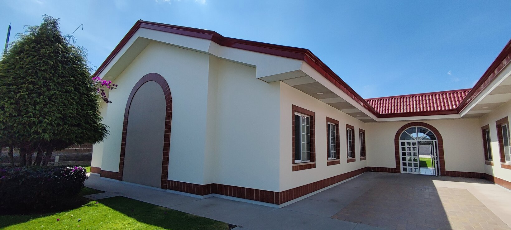

Remodeling of Huejotzingo Ward Church Building
On October 8, 2023, Nealtican North Stake Presidency informed that the Church Area Mexico Presidency had approved the remodeling of the Huejotzingo Ward Church Building in preparation for relocating all Stake activities to the new building. This process will involve the creation of new spaces in the building to accommodate Stake Presidency Offices, High Council and Family History Rooms, and also the enlargement of the Sacrament Room, all of which will be available in the building once the remodeling activities are finished. Additional changes will be necessary to accommodate the newly created and enlarged spaces, which include the relocation of the basketball yard and parking spots inside the building.
Duration
Due to the magnitude of the changes that the building is going to receive, it is planned that the construction activities will last between 9 and 12 months. It is expected that all the construction activities will start on October 29, 2023, and they will be finished between July 30 and December 30, 2024.

Preparation
In preparation for the remodeling process, all Ward Quorums and Organizations must empty their assigned lockers in the Huejotzingo building and also ask all their organization's members to remove any personal belongings that could be stored inside the building before October 29, 2023. For security reasons, access to the Huejotzingo Ward building will be completely restricted once the construction activities begin.